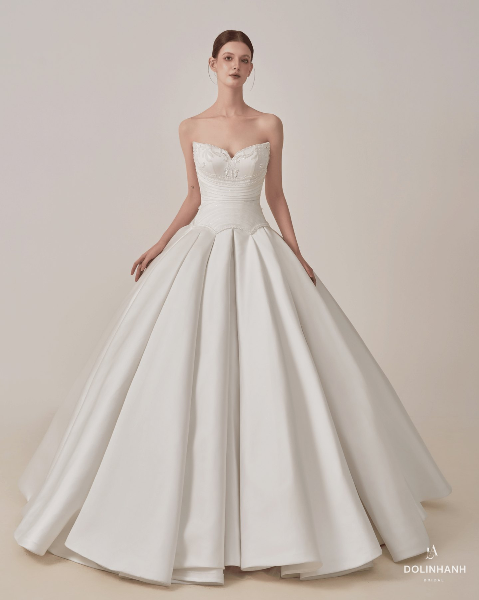
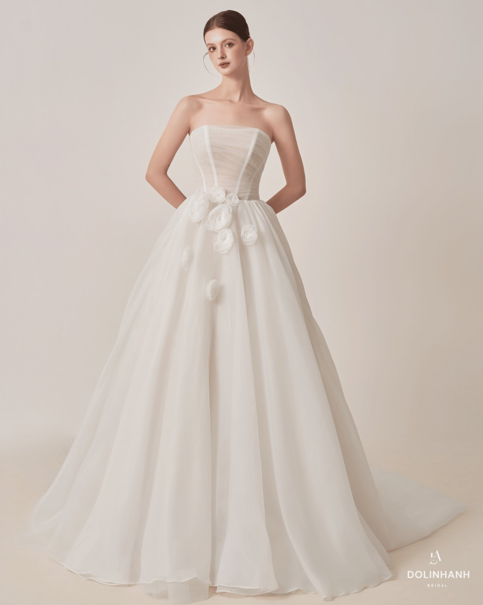
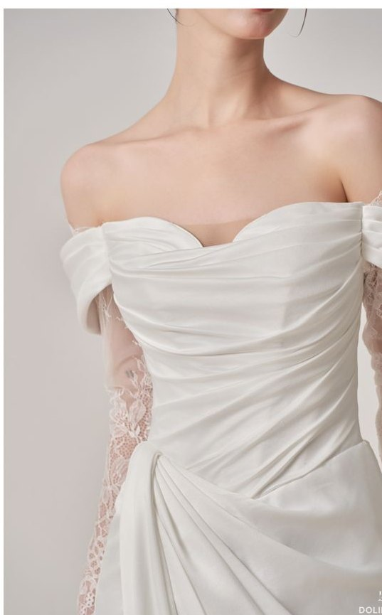
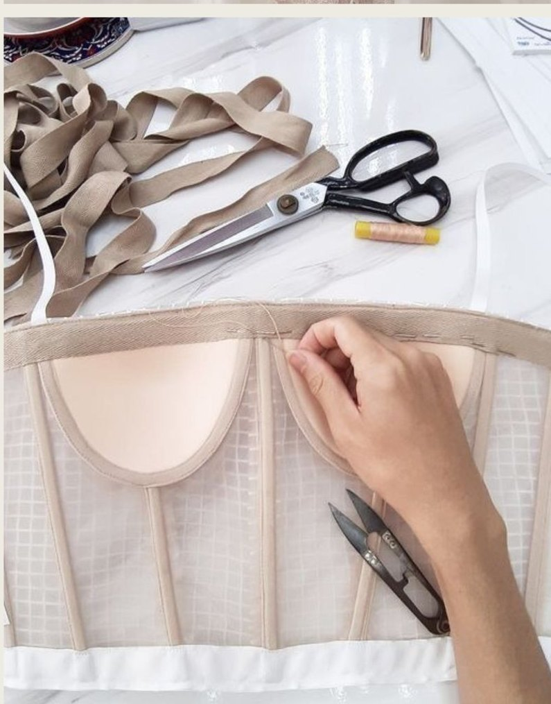
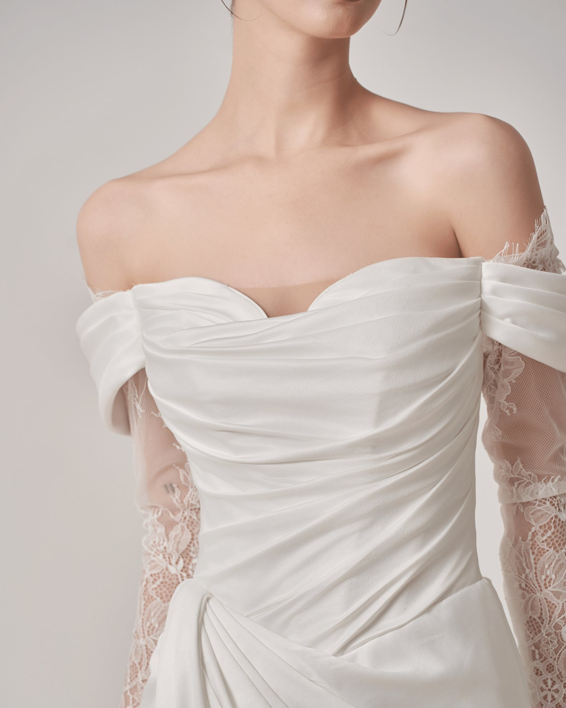

“Lưu 100 chiếc váy nhưng không biết mình hợp chiếc nào?”
Bạn càng xem nhiều, càng khó chọn. A-line? Mermaid? Ball gown? Satin? Ren? Cuối cùng bạn có một album đầy váy cưới nhưng vẫn không biết mình thực sự muốn gì.
7 điều cô dâu cần biết trước khi quyết định chiếc váy cưới của mình.
Một chiếc váy có thể rất đẹp trên ảnh, trên mannequin hoặc trên một cô dâu khác. Nhưng điều quan trọng là: nó có thực sự đẹp khi mặc lên chính bạn không?
Dolinhanh Bridal gửi tặng cô dâu Bộ Checklist chọn váy cưới hoàn toàn miễn phí — giúp bạn biết mình nên bắt đầu từ đâu, nên thử gì và những lỗi nào cần tránh trước khi đặt cọc.
Nhận checklist miễn phí
Bạn càng xem nhiều, càng khó chọn. A-line? Mermaid? Ball gown? Satin? Ren? Cuối cùng bạn có một album đầy váy cưới nhưng vẫn không biết mình thực sự muốn gì.
Ảnh catalogue có thể đẹp. Nhưng form dáng, chiều cao, tỷ lệ cơ thể và chất liệu của mỗi cô dâu hoàn toàn khác nhau. Một chiếc váy đẹp chưa chắc là một chiếc váy hợp với bạn.

Eo, vai, bắp tay, hông, chiều cao… Nhiều cô dâu bước vào showroom với suy nghĩ: “Em béo nên chắc không mặc được kiểu này.”
Thực tế, đôi khi vấn đề không nằm ở cơ thể bạn. Mà nằm ở việc bạn chưa tìm đúng form váy.
Chiếc váy bạn thích nhất lúc thử chưa chắc là chiếc váy bạn thấy thoải mái nhất trong ngày cưới. Cô dâu cần cân nhắc cả:
Mẹ thích ren. Bạn thân thích váy bồng. Chú rể thích đơn giản. Instagram lại đang có một kiểu khác.
Cuối cùng… người mặc váy là bạn nhưng người quyết định lại là tất cả mọi người.
Không chỉ là “Đẹp.” Mà phải là:
Tôn lên tỷ lệ cơ thể thay vì cố che giấu mọi thứ.
Nhìn vào chiếc váy và vẫn thấy đó là chính bạn.
Một chiếc váy đẹp trong studio chưa chắc phù hợp với lễ đường hay tiệc cưới của bạn.
Chất liệu quyết định rất nhiều đến cách chiếc váy rơi, ôm và chuyển động trên cơ thể.
Chiếc váy đúng là chiếc váy khiến bạn nhìn vào gương và nghĩ: “Đúng rồi. Đây là mình.”


Bộ checklist chọn váy cưới miễn phí. Bạn sẽ biết:
Bạn nhắn cho bọn mình chữ CHECKLIST, Dolinhanh gửi lại bộ tài liệu miễn phí trong ngày. Không cần điền form, không cần để lại gì cả.
Nhắn Zalo nhận checklistZalo 035 995 0588 · trả lời 11h – 19h
Sau khi có checklist, bạn có thể đặt lịch fitting riêng tại Dolinhanh Bridal. Không cần biết trước mình hợp dáng váy nào. Không cần tự chọn giữa hàng trăm mẫu.
Stylist sẽ cùng bạn
Một buổi thử váy tập trung hoàn toàn vào bạn.
Đặt lịch fitting
Dolinhanh Bridal
Quiet · Minimal · Timeless
Chúng tôi tin rằng cô dâu không cần mặc một chiếc váy khiến tất cả mọi người phải nói: “Wow, chiếc váy đẹp quá.”
Mà cần một chiếc váy khiến chính mình nhìn vào gương và nói:
“Đúng. Đây là mình.”